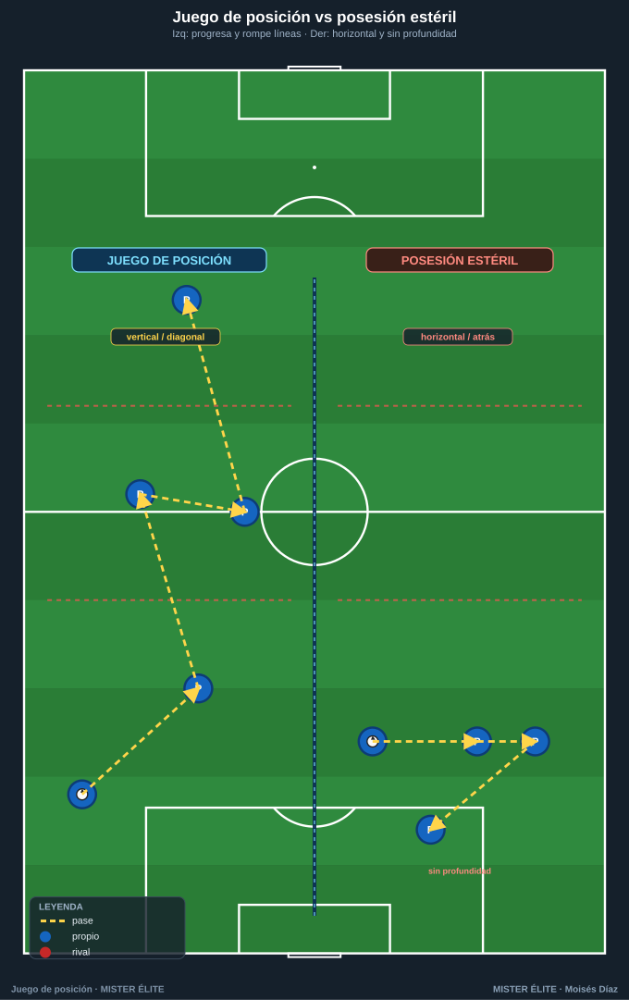
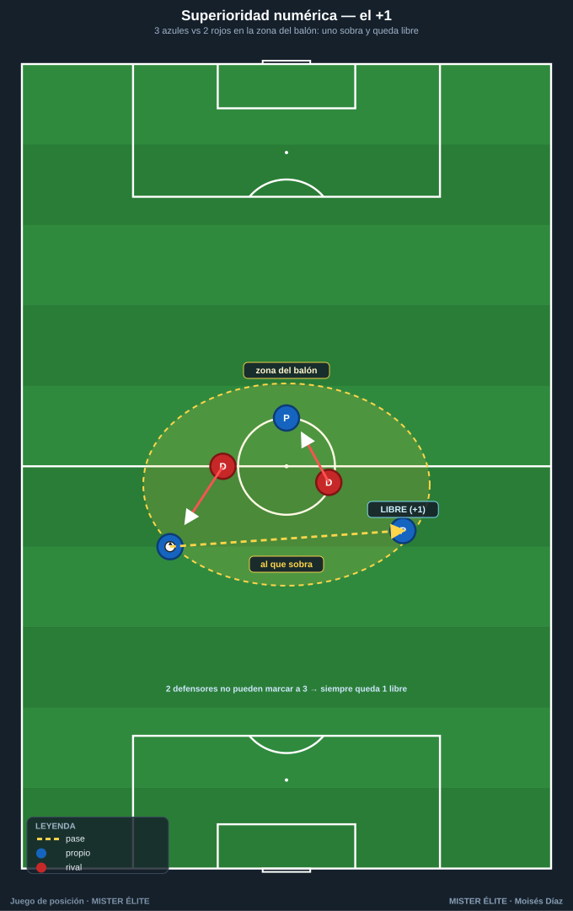
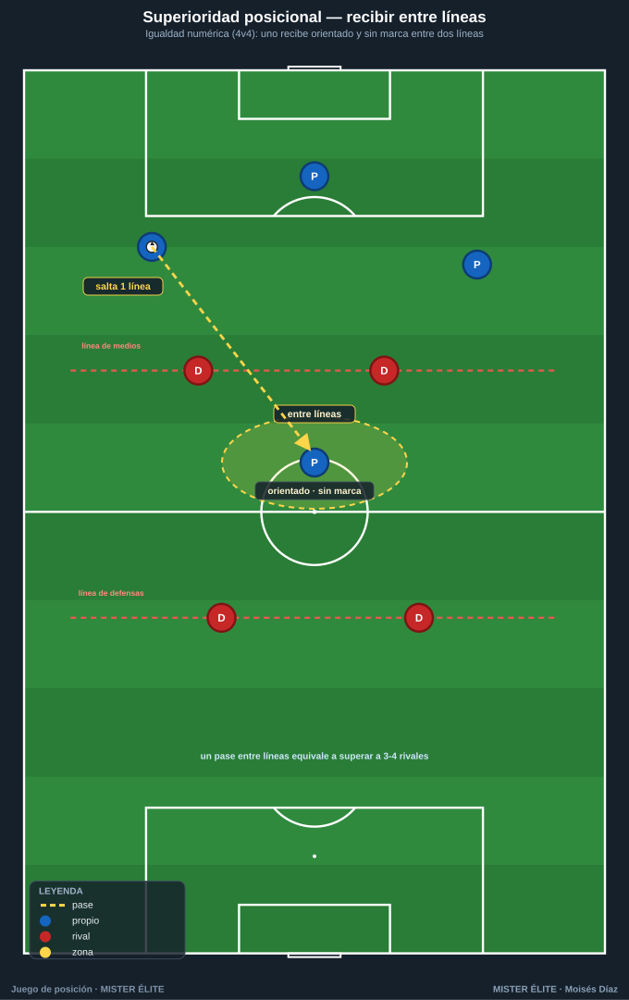
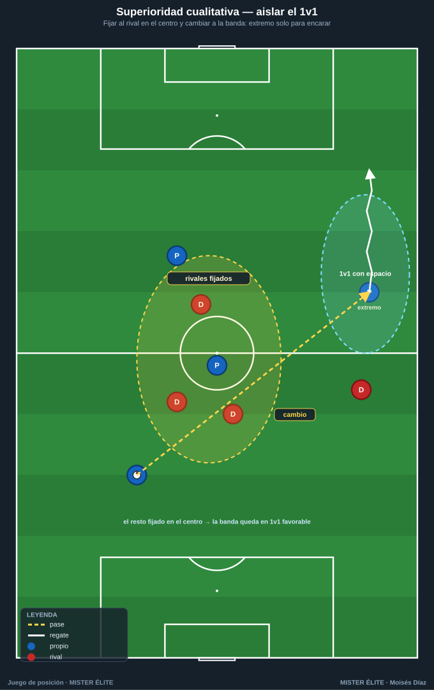
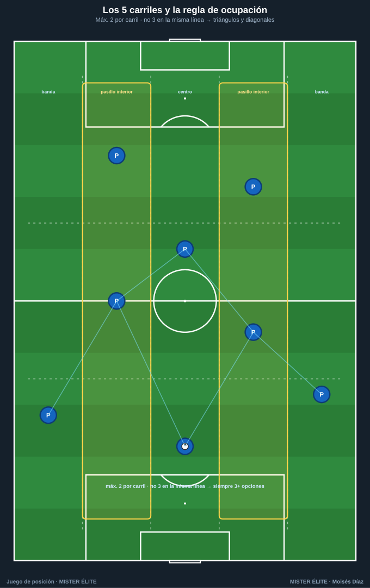

Módulo 01 · Fundamentos del juego de posición
Qué es el juego de posición (y qué no es) · las tres superioridades · ocupación racional del espacio · por qué funciona.
1. Qué es el juego de posición
El juego de posición es un modelo de organización del equipo con balón cuyo objetivo no es tener el balón, sino usarlo para progresar generando superioridades. Se basa en ocupar el espacio de forma racional y estable (jugadores repartidos en anchura, profundidad y entre líneas) de modo que el poseedor disponga siempre de varias líneas de pase orientadas hacia adelante y el equipo conserve una estructura que permita atacar bien y, tras la pérdida, recuperar rápido.
Definición de trabajo: juego de posición = ocupar racionalmente el espacio + crear superioridades + circular el balón con la intención de avanzar y rematar, manteniendo una estructura que facilite la recuperación inmediata.
Tres ideas siempre presentes:
- Posición antes que balón. Primero me sitúo bien (perfil, distancia, altura), después recibo. La estructura es estable, no depende de dónde va el balón.
- El balón se mueve para mover al rival. Cada pase busca desordenar al adversario, no "pasar por pasar".
- Finalidad. Toda circulación apunta a progresar → finalizar, y a proteger (contrapresión tras pérdida).
Juego de posición vs posesión estéril
La posesión estéril es tener mucho el balón sin progresar ni amenazar: circulación horizontal y hacia atrás que no rompe líneas ni crea ocasión. Domina en la estadística (alto % de posesión) pero no genera control real: no desorganiza al rival.

| Juego de posición | Posesión estéril | |
|---|---|---|
| Objetivo del pase | Mover al rival y progresar | Conservar / no perder |
| Dirección dominante | Vertical y diagonal (rompe líneas) | Horizontal y hacia atrás |
| Ocupación | Racional: anchura + profundidad + entre líneas | Cerca del balón, sin profundidad |
| Superioridades | Se buscan y se explotan | No se generan o no se usan |
| Tras pérdida | Estructura permite contrapresión | Equipo desordenado, vulnerable |
| Métrica útil | Pases que rompen línea, recepciones entre líneas | % de posesión a secas |
Regla de oro: la posesión es buena si, cuando termina, el equipo está más cerca de la portería rival o ha obligado al rival a defender peor. Si el balón vuelve siempre al punto de partida sin mover al rival, es estéril.
2. Las tres superioridades
Crear y aprovechar superioridades es el fin táctico del juego de posición.
Numérica — somos más aquí

Tener más atacantes que defensores en la zona del balón (el clásico +1). Garantiza salida limpia y obliga al rival a elegir a quién marcar: siempre queda alguien libre. Se crea con el portero como jugador de campo, un mediocentro que baja entre centrales, o atrayendo presión a un lado para que el contrario quede sobrado.
Posicional — estamos mejor colocados

Estar mejor situado que el rival, aprovechando los espacios entre líneas y el hombre libre. Puede darse incluso en igualdad numérica (4v4) si uno de los nuestros recibe a espaldas de una línea rival, orientado y sin marca. Un solo pase que lo encuentra equivale a superar a 3-4 rivales.
Cualitativa — ganamos el duelo

Generar un 1v1 a nuestro favor (un extremo veloz contra un lateral lento, p. ej.). Se crea aislando al jugador de calidad: dar amplitud para dejarlo solo frente a su par, fijar al resto en el centro y cambiar el balón a su banda con espacio para encarar.
Síntesis: el juego de posición busca encadenarlas: muevo el balón para crear una, y si el rival la tapa, aparece otra. El rival siempre llega un paso tarde.
3. Ocupación racional del espacio
Los 5 carriles + las alturas

El campo se divide a lo ancho en 5 carriles verticales: banda izq · pasillo interior izq · centro · pasillo interior der · banda der. Y a lo largo en líneas/alturas (defensa, medio, ataque). Los pasillos interiores (2 y 4) son zonas de oro: desde ahí se recibe entre líneas y se ataca en diagonal.
La regla: "no más de 2 por carril, no 3 en la misma línea"
- Máx. 2 por carril vertical: evita amontonarse, mantiene anchura y estira al rival.
- No 3 en la misma línea horizontal: garantiza escalonamiento (jugadores a distintas alturas) → siempre hay apoyo por delante y por detrás, y se crean líneas de pase diagonales (mejores que las horizontales).
- Resultado: el equipo dibuja triángulos y rombos; cada poseedor tiene 3+ opciones y el balón circula sin callejones.
Ocupar para FIJAR y para APOYAR
- Fijar: un jugador en banda o en profundidad obliga a un rival a vigilarlo aunque no reciba, y abre espacio para otros (un extremo a la cal fija al lateral y libera el medio-espacio).
- Apoyar: estar bien situado da al poseedor soluciones reales (apoyo al pie, profundidad por fuera, descarga por detrás). Sin ocupación correcta no hay a quién pasar → posesión estéril.
Regla práctica: ancho cuando atacamos, estrecho cuando defendemos. La amplitud máxima la dan extremos a la cal; la profundidad, un jugador siempre en la última línea que fija a la defensa.
4. Por qué funciona
No es estética: produce ventajas concretas.
- Da control del partido. Con triángulos y buena ocupación, el equipo conserva el balón progresando, dicta el ritmo y fatiga al rival.
- Genera superioridades por diseño. La estructura hace que aparezcan sistemáticamente: si tapan una, expongo otra.
- Facilita la contrapresión. Como los jugadores están cerca, escalonados y repartidos, al perder el balón hay varios a pocos metros para presionar al instante, y el rival está mal posicionado para salir. Atacar ordenado = recuperar ordenado.
- Reduce el riesgo. Tener siempre apoyos y un hombre libre baja la probabilidad de pérdida y evita quedar partido.
Mensaje para el alumno: atacamos bien posicionados no solo para meter gol, sino para no concederlo. Orden con balón = orden sin balón.
Ideas clave
- El objetivo no es tener el balón, es usarlo para progresar creando superioridades.
- Posición antes que balón; el pase mueve al rival, no se da por darlo.
- Tres superioridades: numérica (somos más), posicional (mejor colocados / entre líneas), cualitativa (ganamos el 1v1). Se encadenan.
- Ocupación racional: 5 carriles + alturas, "máx. 2 por carril, no 3 en línea" → triángulos y siempre 3+ opciones.
- El juego de posición es la mejor defensa: la estructura que ataca bien recupera rápido.
Errores comunes
- Confundir posesión con dominio: tocar mucho sin progresar ni amenazar. Medir por pases que rompen línea, no por toques.
- Amontonarse en el carril del balón: facilita la presión y elimina líneas de pase. Aplicar la regla de ocupación.
- Falta de profundidad: nadie amenaza la espalda → el rival sube y comprime. Tener siempre un jugador en la última línea.
- Buscar la posesión por la posesión sin finalidad: olvidar que toda circulación apunta a progresar, finalizar y proteger.
MISTER ÉLITE — Moisés Díaz